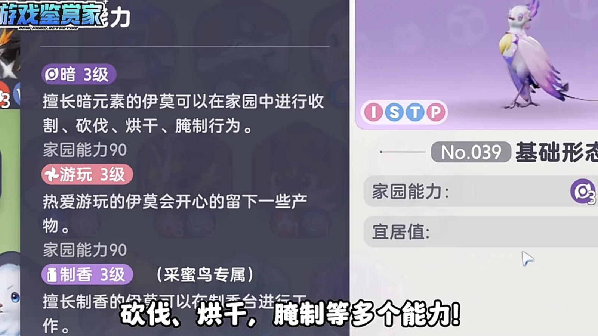
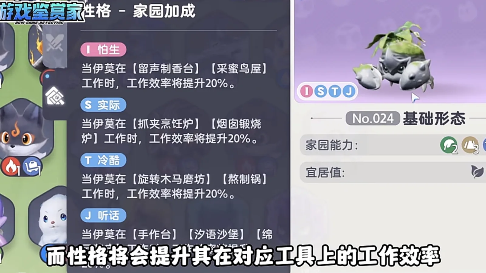
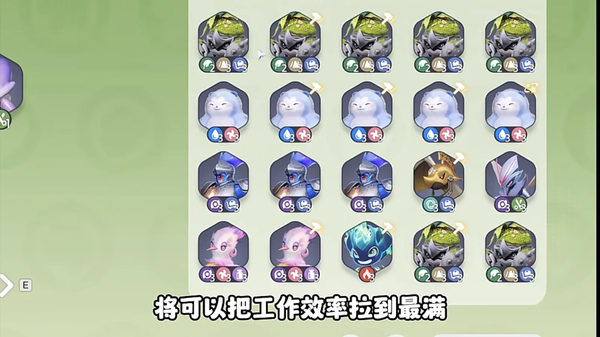
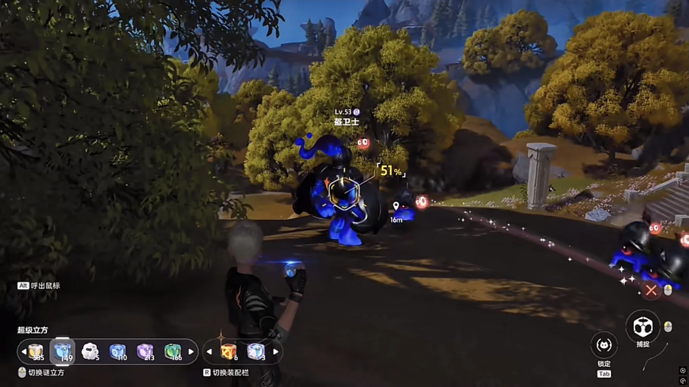
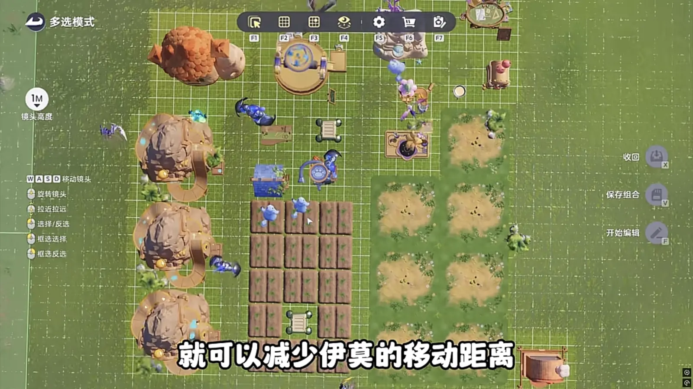
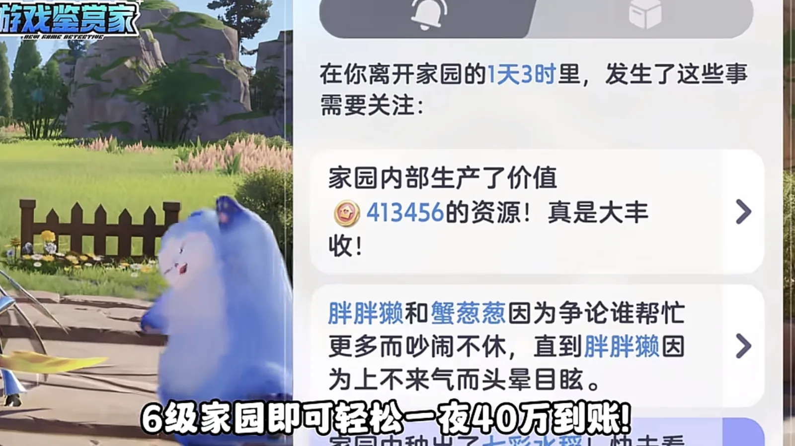

Home首页 / Guides攻略 / The Homeland Production Line: 400,000 a Night Out of a Level 6 Base家园流水线：六级家园一夜进账四十万，就看你怎么派这几只打工伊莫
Checked核对于 October 9, 20262026 年 10 月 9 日
The Homeland Production Line: 400,000 a Night Out of a Level 6 Base家园流水线：六级家园一夜进账四十万，就看你怎么派这几只打工伊莫
How the Homeland actually makes money: the two things that decide how fast a worker is, which Aniimo to station and where each one is caught, and why the warehouse ends up in the middle of the fields.家园到底靠什么赚钱：决定打工伊莫快慢的只有两样东西、每只该去哪儿抓，以及仓库为什么最后要放在田中间。
Making money in the Homeland is a production line: plant the fields, dig the mines, and let the Aniimo do the rest while you are logged off. The buildings are not what decides the size of the number that meets you when you come back — who you put to work in them is. Watch two things, move one building, and a level 6 base hands you 400,000 in a night.家园赚钱这件事，说穿了就是一条流水线：把地种上、把矿挖出来，剩下的交给伊莫自己去干。你去睡觉，回头收钱 —— 六级家园一晚上就能进账四十万。诀窍不在建筑多贵，而在你派了谁去打工。盯住两个指标，再把仓库挪对位置，效率就能拉满。
Two things decide a worker, and neither is a combat tag打工伊莫只看两样：家园能力和性格
Aniimo stationed in the Homeland are not picked the way a battle team is. Alpha, Sparkling, Prismana — none of it counts here. There are two numbers, and only two: the Homeland ability, and the trait.派进家园干活的伊莫，不看头目、闪亮、虹光这些词条，只盯两个指标：性格和家园能力。
The ability decides which jobs it can take at all, and a Dark worker has the widest list going: harvesting, chopping, drying and pickling all sit on it, so one Dark Aniimo can carry a single plot from the first cut to the finished product without handing off.家园能力决定它能干哪些活。暗元素的伊莫，收割、砍伐、烘干、腌制一把抓，一块地从头到尾的活儿它一只就能包下来。

The trait decides how fast it works once it is there, and the ceiling on that is 20%. Each trait names a few facilities, and the bonus only lands on a worker standing in one of them — which is why getting the ability right is not enough on its own.性格决定的则是它在对应工具上的效率，最高能把速度抬两成。每一档性格认准几处建筑，装上以后，对得上工具的活儿才吃这口加成 —— 所以光把能力配对还不够。

Open a building and copy what it recommends点开建筑详情，照着推荐配就行
Open a building's detail panel and most of them name a recommended Aniimo, together with the ability and the trait that go with it. Copy what the panel says and the job is done.点开建筑详情，大部分建筑都标着推荐伊莫，能力和性格配得整整齐齐，照着抄就行。
The Well is the plain example. Station a Panpanta (Water · Break) whose trait and ability both match it and the well's efficiency goes up 200% — one Aniimo doing the work of several.水井是典型。派一只性格、能力都对得上的胖胖獭（Panpanta，水 · 击破）去打水，效率能提 200%，一口井顶好几只。
And one Aniimo often settles two buildings at once. The Claw Game Cooker wants a Fire worker carrying S, the Simmering Pot wants one carrying T — so a Sparki (Fire · Regen) that turns up in the wild with both traits on it is the best worker you can put in either, and worth taking straight home.不同建筑的推荐伊莫，一只就够兼顾两处。抓夹烹饪炉认火 S 性格，熬制锅认火 T 性格 —— 你要是在野外碰上一只同时带着 T、S 两种性格的幽幽焰（Sparki，火 · 回能），那它就是家园里最能打的一只，直接上岗。
Raise the form if you can, but level 3 is enough形态能升就升，但三级够用了
Homeland ability climbs with the Aniimo's form. Take a worker to its final stage and the ability numbers rise with it, and the higher the ability the faster the job goes.家园能力还会跟着形态涨。把打工伊莫升到最高形态，能力数值一起往上抬，能力越高干得越快。
There is no reason to chase the top, though. The highest ability going is level 4, and those Aniimo are usually Prismana — either a main party member or a collector's piece, and neither belongs out in a field doing chores. A level 3 worker is enough.不过没必要追到顶。目前最高的是四级能力伊莫，而这些往往是虹光伊莫 —— 要么是你的主力，要么是压箱底的珍藏，放家园里干粗活不值当。三级能力的伊莫，够用了。
Shrubclaw and Rookey cover half the base between them蟹葱葱加盔卫士，两只包下半座家园
A few Aniimo have unusually wide ability lists and can hold down several posts on their own. Leafy (Grass, Water · Regen), Shrubclaw (Rock, Grass · Break) and Rookey (Dark · Break) are the three — mining and farming are both on their list — and the last two especially.有些伊莫能力特别全，一只顶好几个岗位。莲冠龙（Leafy，草 · 水 · 回能）、蟹葱葱（Shrubclaw，土 · 草 · 击破）和盔卫士（Rookey，暗 · 击破）这三只，挖矿、种田的活儿基本都能包下，尤其是后两只。
Shrubclaw tills a plot and then sows it, so one field is finished without it ever moving. Rookey reaps and then hauls the goods into the warehouse, which saves the trips several other Aniimo would make back and forth. On a level 6 base, that pair is most of your throughput.蟹葱葱先开垦再播种，两种能力原地就把一块田解决了；盔卫士收割完，紧接着把东西搬进仓库，省掉好几只伊莫来回跑的时间。六级家园用这套组合，效率能拉到最满。

Where to catch them这几只去哪儿抓
None of them is hard to find. Walk to the right area and they are there.这几只都不难找，位置对着走就行。
Shrubclaw is the third stage, and our table files it in Berylline Causeway. The shorter route is its first stage, Budclaw, which spawns in Nimbus Fields — around the first teleport point you reach in the game — and evolves up into it. Catch a stack of those and evolve them.蟹葱葱是三阶，栖息地记在青石台。更省事的路子是抓它的一阶花芽蟹（Budclaw）—— 云上草原、进游戏碰到的第一个传送点附近就能抓一堆 —— 再进化上来。
The Well is run by Panpanta, and the route there is Echoback Landing. Only the boss is worth catching on the spot, and the Aniipod Ultra that takes is too precious — so catch the stage-2 Popota (Water · Break) around the boss instead and evolve it up, which saves a real amount of material.水井那口主力是胖胖獭。鲸落浅滩只有一个 boss 能抓，可冠军立方太珍贵，可以趁 boss 周围抓二阶的泡泡獭（Popota，水 · 击破），再往上进化，省下不少资源。
Rookey is in Russet Highlands, and you do not have to fight the boss for it: leave the boss room, turn left, and the one on the hilltop is the only one outside the boss fight. The rest come from respawns. If night mode is running, a Sparki carrying both T and S spawns beside it.盔卫士在丹岩高地，不用去打 boss。从 boss 房出门左拐的山头上，能抓到除 boss 之外唯一的一只，剩下的靠刷新。赶上有夜间模式，盔卫士旁边还能刷到兼具 T、S 双性格的幽幽焰。
Fragrancier (Dark · Support) is in the Sea of Flowers: one sits on the arc-shaped island beside the teleport point on the right, and it is worth refreshing for a second. Ignitis (Dark · DPS) is less trouble still — catch one in Berylline Causeway and evolve it.香氛鸟（Fragrancier，暗 · 辅助）在鸢尾花海，右边传送点旁的弧形岛上有唯一的一只，建议刷新抓两只。淬刃螳螂（Ignitis，暗 · 输出）更省事，青石台随便抓一个进化。
If the base needs Electric later on, keep a level 3 Blazen (Electric · Break) from Blitzwood. Catching that needs no boss either: take any small one and upgrade it under the lightning tree behind the boss.万一家园后期要用上电，去闪电之森备一只三级雷光貂（Blazen，电 · 击破）。抓它不用碰 boss，随便拎个小的，再去 boss 身后那棵闪电树升级就行。

Lay the buildings out and the money arrives on its own摆好建筑，钱自己进账
With the workers in place the last step is the layout. Put the warehouse in the middle of the fields: shorter walks for the Aniimo, and throughput goes straight up.凑齐这些打工伊莫，最后一步是摆建筑。把仓库放到田中间，缩短伊莫的移动距离，效率直接拉满。

Then set every building to make its highest-value product. What the Farmland and the Woodland have to do is grow the materials that product needs — the raw materials come out of your own base, the finished goods are the valuable half, and 400,000 overnight is what that adds up to.想赚钱，只用在建筑设置里生产价值最高的产品。农田和林地要做的，就是种出这些最高价值产品所需的材料 —— 原料自己产，成品最值钱，一晚上四十万就是这么来的。
Level the base to 6 first, then match the Aniimo to each facility, then move the warehouse into the middle of the fields. The rest is time.先升到六级家园，再按能力配好伊莫，把仓库挪到田中间，剩下的事交给时间。
